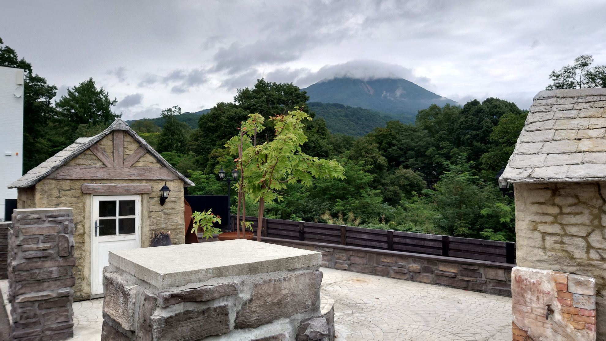

ABOUT SEVEN FOREST
車と人、
自然がつながる。
Seven Forest Classicについて
OUR STORY
走る歓びを、
分かち合う場所。
Seven Forest Classicは、クラシックカーPC競技を中心に活動する愛好家グループです。精密な走行技術の向上だけでなく、車を通じた人と人とのつながりを大切にしています。
拠点は福島県耶麻郡磐梯町の「七ッ森ペンション」。磐梯山の中腹に位置し、四季を楽しめる自然豊かな場所です。敷地内には30台分の車庫を設け、クラシックカーをナンバープレート登録のうえ丁寧に保管しています。
福島・宮城・東北エリアを拠点に、練習会やラリーイベントを通じてクラシックカー文化の魅力を次世代へ伝えています。車種や年式を問わず、クラシックカーに情熱を持つ方を歓迎します。
トップページへ戻る ↗